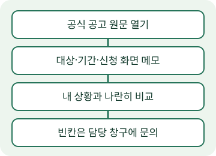

2025 청년내일저축계좌, 대상과 신청 기간 정리
이 글은 지난 모집 공고를 읽는 학습용 정리입니다. 아래 모집은 접수가 끝났습니다. 현재 신청 가능 여부를 안내하는 글로 사용하지 마세요. 기준일은 2026-10-26이며, 논산시가 게시한 2025년 안내 본문만 정리했습니다. [출처: https://www.nonsan.go.kr/kor/html/sub03/030101.html?mode=V&no=d9a1bc7c92989f6efc5db48376a36cf3 | 2026-10-26 | 게시 2025-05-02, 모집일정 2025. 5. 2.(금) ~ 5. 21.(수)]
대상은 나이와 가구소득을 함께 봅니다
공지의 대상은 ‘기준 중위소득 100% 이하 가구의 만19세 ~ 34세 일하는 청년’입니다. 수급자·차상위자는 ‘15세~39세’로 따로 적혀 있습니다. [출처: https://www.nonsan.go.kr/kor/html/sub03/030101.html?mode=V&no=d9a1bc7c92989f6efc5db48376a36cf3 | 2026-10-26 | 대상·예외 연령]
근로·사업소득은 ‘월 50만원 초과 ~ 250만원 이하’입니다. 수급자·차상위자는 ‘월 10만원 이상’입니다. 일반 기준과 예외 기준을 섞지 않고 자신의 상황과 나란히 놓고 읽으세요. [출처: https://www.nonsan.go.kr/kor/html/sub03/030101.html?mode=V&no=d9a1bc7c92989f6efc5db48376a36cf3 | 2026-10-26 | 소득·예외 소득]
청년이거나 일을 한다는 조건만으로 대상이라고 판단하면 빠지는 항목이 생깁니다. 나이·가구소득·근로 및 사업소득을 각각 표시하세요. 이 글의 요약만으로 개인의 가입 가능 여부를 결정하지 말고 원문의 첨부 안내와 담당 기관에서 세부 사항을 확인하세요.
지원 금액은 본인 저축과 정부 지원을 나눕니다
원문은 ‘본인 월 10~50만원 저축 시 정부매칭 월 10만원 지원’이라고 안내합니다. 수급자·차상위자는 ‘월 30만원 지원’입니다. 내 통장에 넣는 돈과 정부가 지원하는 돈을 구별해 읽으세요. [출처: https://www.nonsan.go.kr/kor/html/sub03/030101.html?mode=V&no=d9a1bc7c92989f6efc5db48376a36cf3 | 2026-10-26 | 지원·수급자 및 차상위자 지원]
이 요약에서는 만기 수령액이나 이자를 계산하지 않았습니다. 본문에서 확인한 지원 내용을 설명하는 데 그치며, 신청만 하면 바로 입금된다는 뜻으로 바꾸지 않습니다. 실제 유지 조건과 지급 판단은 해당 모집의 세부 안내를 확인해야 합니다.

그림은 직접 만든 설명용 순서도입니다. 신청 화면이나 수령 사실을 증명하는 사진이 아닙니다.
모집 기간과 접수처를 따로 적어 둡니다
원문의 모집일정은 ‘2025. 5. 2.(금) ~ 5. 21.(수)’입니다. 접수처는 복지로 또는 읍면동 행정복지센터입니다. 이 기간은 지났으므로 이 글을 보고 지금 같은 모집에 접수하지 마세요. [출처: https://www.nonsan.go.kr/kor/html/sub03/030101.html?mode=V&no=d9a1bc7c92989f6efc5db48376a36cf3 | 2026-10-26 | 모집일정·접수처]
새로 신청할 제도를 찾는 독자는 복지로와 담당 기관의 최신 공지에서 모집 연도·대상·기간을 다시 확인하세요. 예전 공고의 조건을 새 공고에 복사하지 마세요. 제출 자료의 상세 목록도 이 게시물의 짧은 본문만으로 채우지 않고 첨부 안내와 담당 창구에서 확인합니다.
내 경험을 넣기 전: 자료 확인 메모
이 예시는 신청하거나 지원금을 받은 체험담이 아닙니다. 자료를 확인할 때는 일반 대상 옆에 수급자·차상위자의 예외가 따로 있다는 점을 표시했습니다. 접수처부터 찾기보다 대상과 소득을 나눠 읽으니 글에 남길 순서가 보였습니다. 독자는 이 문단을 본인이 실제 원문에서 확인한 과정으로 바꾸고, 하지 않은 신청·수령 경험은 쓰지 마세요.
출처와 다음 확인
자료 출처: 논산시 주민생활지원과, 요즘 있는 청년, 청년내일저축계좌. 게시일 2025-05-02, 확인일 2026-10-26. 게시물의 공공누리 제1유형 출처표시 조건에 따라 본문을 정리했습니다. 기관 포스터와 로고는 재사용하지 않았습니다. [출처: https://www.nonsan.go.kr/kor/html/sub03/030101.html?mode=V&no=d9a1bc7c92989f6efc5db48376a36cf3 | 2026-10-26 | 게시일·본문·공공누리 출처표시]
확인할 점: 현재 신청하려면 해당 연도의 최신 공고를 직접 여세요. 개인의 대상 여부와 제출 자료는 담당 기관에 문의하고, 확인되지 않은 금액이나 조건은 AI로 채우지 마세요.